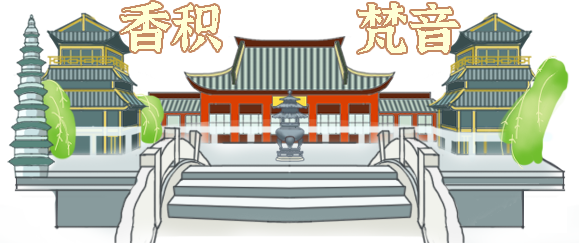

京杭大运河
拥有着丰厚而悠久的历史,
始建于春秋时期,
是世界上里程最长、工程最大的古代运河,
也是最古老的运河之一。

春秋吴国为伐齐国而开凿邗沟，
隋朝大幅度扩修并贯通至都城洛阳且连涿郡，
元朝翻修时弃洛阳而取直至北京。
开凿到现在已有2500多年的历史。
它是全球开凿时间最早、使用时间最久、空间跨度最大的运河，
被列入世界遗产名录；
3500里纵穿南北，
2500年横贯古今。
京杭大运河绵延万万里而永不停歇，
奔流千千载而越发生机,
为加强流域附近的经济发展起到了重要的作用。

运河贯通南北，
流域广阔,
成为真正意义上的南北交通要道，
商运繁盛，
运河两岸兴起数十座商业城镇，
加强了南北方的经济联系与交通。
京杭大运河同时是一颗文化的璀璨明珠，
留下了丰富的历史文化遗存，
孕育了一座座璀璨明珠般的名城古镇，
积淀了深厚悠久的文化底蕴.
杭州段作为京杭大运河的江南运河末段,
同时也是京杭大运河中最值得看,
最美丽的一段,
杭州段有着著名的“运河十景”。
感受运河的独特韵味，
在京杭大运河杭州段，
您可以乘坐运河游船，
欣赏沿途的古桥、历史建筑和美丽的风景。
还可以在历史悠久的街区里漫步，感受那份独特的韵味。
无论是古色古香的“拱宸邀月”、“凤山烟雨”，
还是现代特色的“武林问渡”、“三堡会澜”，
都展现出京杭大运河杭州段的独特魅力。

运河不仅仅带来了人类文明的生机勃勃，
同时也养育了很多的生命，
重视运河的保护，
让运河更长久，
更活泼地流淌下去，
不知不觉中，
杭州段已经被你一览无余，
其中的体验让你如获新生，
从所未有的感受让你流连忘返……